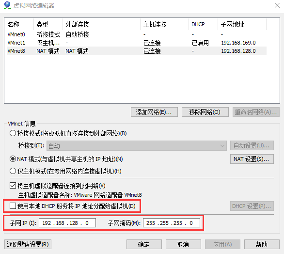

CentOS应用¶
CentOS7.3Minimal从零配置C/C++开发环境¶
VMware Workstation虚拟机环境, 系统为CentOS-7-x86_64-Minimal-1611.
安装以下软件包:
vim git gcc gcc-c++ cmake gdb open-vm-tools (可选, 共享文件夹,和本机时间同步等) unzip
配置vim+YouCompleteMe等插件环境
安装 python-devel
git clone https://github.com/VundleVim/Vundle.vim.git ~/.vim/bundle/Vundle.vim
构造~/.vimrc, 在里面配置要装的plugin, 比如:
"""""""""""""""""""""""""""""""""""""""""""""""""""""""""""""" " Vundle set nocompatible " be iMproved, required filetype off " required " set the runtime path to include Vundle and initialize set rtp+=~/.vim/bundle/Vundle.vim call vundle#begin() " alternatively, pass a path where Vundle should install plugins "call vundle#begin('~/some/path/here') " let Vundle manage Vundle, required Plugin 'VundleVim/Vundle.vim' " The following are examples of different formats supported. " Keep Plugin commands between vundle#begin/end. " plugin on GitHub repo Plugin 'Lokaltog/vim-powerline' Plugin 'Valloric/YouCompleteMe' Plugin 'vim-scripts/molokai' Plugin 'vim-scripts/DoxygenToolkit.vim' Plugin 'vim-scripts/cpp_cppcheck.vim' " plugin from http://vim-scripts.org/vim/scripts.html "Plugin 'L9' "Plugin 'DfrankUtil' " Git plugin not hosted on GitHub "Plugin 'git://git.wincent.com/command-t.git' " git repos on your local machine (i.e. when working on your own plugin) "Plugin 'file:///home/gmarik/path/to/plugin' " The sparkup vim script is in a subdirectory of this repo called vim. " Pass the path to set the runtimepath properly. "Plugin 'rstacruz/sparkup', {'rtp': 'vim/'} " Avoid a name conflict with L9 "Plugin 'user/L9', {'name': 'newL9'} " All of your Plugins must be added before the following line call vundle#end() " required filetype plugin indent on " required " To ignore plugin indent changes, instead use: "filetype plugin on " " Brief help " :PluginList - lists configured plugins " :PluginInstall - installs plugins; append `!` to update or just :PluginUpdate " :PluginSearch foo - searches for foo; append `!` to refresh local cache " :PluginClean - confirms removal of unused plugins; append `!` to auto-approve removal " " see :h vundle for more details or wiki for FAQ " Put your non-Plugin stuff after this line """"""""""""""""""""""""""""""""""""""""""""""""""""""""""""""" """"""""""""""""""""""""""""""""""""""""""""""""""""""""""""""" " YCM " 允许自动加载.ycm_extra_conf.py，不再提示 let g:ycm_confirm_extra_conf=0 " 补全功能在注释中同样有效 let g:ycm_complete_in_comments=1 " 开启tags补全引擎 let g:ycm_collect_identifiers_from_tags_files=1 " 键入第一个字符时就开始列出匹配项 let g:ycm_min_num_of_chars_for_completion=1 " 语法关键字补全 let g:ycm_seed_identifiers_with_syntax=1 " YCM相关快捷键 nnoremap <leader>gl :YcmCompleter GoToDeclaration<CR> nnoremap <leader>gf :YcmCompleter GoToDefinition<CR> nnoremap <leader>gg :YcmCompleter GoToDefinitionElseDeclaration<CR> map <F4> :YcmDiags<CR> map <F5> :lclose<CR> """"""""""""""""""""""""""""""""""""""""""""""""""""""""""""""" " Doxygen let g:DoxygenToolkit_authorName="zzqcn" let g:DoxygenToolkit_enhanced_color=1 let g:DoxygenToolkit_versionTag=0 let g:DoxygenToolkit_versionString=0
启动vim, 执行命令
:PluginInstall(等待下载插件)cd ~/.vim/bundle/YouCompleteMe, 由于此CentOS安装的vim版本为7.4.160, 而YouCompleteMe git仓库最新版本要求7.4.1568+, 因此需要回退到老版本. 当然也可以下载vim新版本源码并编译, 要编译它又需要安装一堆软件包, 而且可能C/C++环境也需要更新, 太麻烦. 直接运行
git reset --hard 61b5aa7./install.py --clang-completer(编译C/C++支持)
在命令行显示当前分支, 见 https://zzqcn.github.io/tools/git/tricks.html#id2
网络配置失败,显示Failed to start LSB: Bring up/down networking¶
假设要配置的接口是ens33,
确认/etc/sysconfig/network-scripts/ifcfg-ens33 中的MAC地址 配置正确, 即HWADDR的值
如果HWADDR正确还报此错误, 运行:
systemctl stop NetworkManager systemctl disable NetworkManager
运行service network restart即可
共享CentOS虚拟机上的文件给Windows本机访问¶
以下操作都需要root权限.
yum install samba编辑
/etc/samba/smb.conf, 内容如下:[global] workgroup = WORKGROUP security = user passdb backend = tdbsam printing = cups printcap name = cups load printers = yes cups options = raw [dev] path = /home/zzq public = yes writable = yes create mask = 0644 directory mask = 0755
配置重点:
- [global]中的workgroup要设成和本机工作组一致.
- [dev]是共享的虚拟目录名, 从windows访问时将看到名为dev的共享目录
- path为要共享的实际目录
- public = yes, 允许所有用户访问, 如果只允许某些用户访问, 则使用 valid users = aaa bbb 这样的设置, aaa,bbb为用户
- writable = yes, 允许写操作
- create mask = 0644, 设置新建文件权限, 使得新建文件不带有可执行属性
设置用户访问密码. 这里为了方便, 没有创建新用户, 直接使用已有用户zzq:
smbpasswd -a zzq
关闭SELinux.
- 临时关闭
setenforce 0; - 永久关闭, 修改/etc/selinux/config, 将
SELINUX=enforcing改为SELINUX=disabled, 重启即可
- 临时关闭
注解
如果不想关闭SELinux, 可以运行
setsebool -P samba_enable_home_dirs=1开启samba用户HOME目录的权限, 共享其他目录及权限设置方法请查询selinux+samba.
在防火墙上开放samba所用端口:
firewall-cmd --permanent --add-port=139/tcp firewall-cmd --permanent --add-port=445/tcp systemctl restart firewalld
启动samba服务, 并设置为开机启动:
systemctl enable smb.service systemctl restart smb.service
在windows上通过
\\<虚拟机IP>这样的地址在资源管理器访问即可
VMware虚拟机配置静态IP¶
虚拟机配置为DHCP非常方便, 但是会出现ip地址改变的问题, 导致要经常修改远程登录工具如SecureCRT中的IP地址. 为了解决这个问题, 可以对虚拟机设置静态IP地址. 步骤如下:
在VMware Workstation中打开虚拟网络编辑器, 这里我们使用VMnet8, 它是类型是NAT模式, 注意把”使用本地DHCP服务将IP地址分配给虚拟机”复选框前的打勾取消, 并确认子网IP和掩码.
点击”NATR设置”按钮, 确认子网信息, 设置网关IP

本机通过虚拟网卡也加入了这个虚拟网络VMnet8, 因此我们需要配置这个虚拟网卡的IP. 打开系统设置中网络适配器设置, 找到这块虚拟网卡(一般名字是VMware Network Adapter VMnet8), 配置其IPv4属性:

启动CentOS虚拟机, 使用管理员权限编辑
/etc/sysconfig/network-scripts/ifcfg-ens33文件, 按如下配置进行修改(注意不同虚拟机可能网卡名字不同, 这里是ens33):TYPE=Ethernet BOOTPROTO=static ONBOOT=yes IPADDR=192.168.128.4 GATEWAY=192.168.128.1 NETMASK=255.255.255.0 DNS1=8.8.8.8 DNS2=114.114.114.114
其余不变, 修改后保存
使用管理员权限运行
service network restart重启网络服务ping baidu.com等, 看网络是否连通